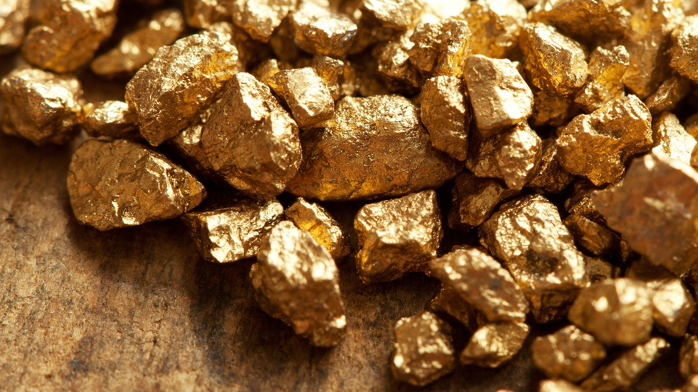
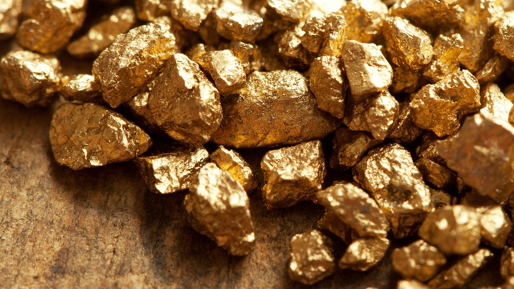

History of Zimbabwe
Early History
From the 11th to the 15th Century Zimbabwe was an Empire run by the native Shona people and they formed a huge city that is now known as Great Zimbabwe
European Colonization
The Portugese came to Zimbabwe in the 1500's. They sided with the Arab traders that were already bothering the natives and took control of many natural resources like ivory and gold 
British Take-Over
In the 18th century the Ndebele people fled to the North of the country to escape the Zulu people. Meanwhile Great britain was beginning to gain interest in the country. in 1891, the British annexed all land north of the Transvaal, which separates the south (owned by Germany), and North (owned by Portugal). Any action against this was suppressed.
Modern Day Zimbabwe
in 1965, the minority rule of whites in the government broke away from Britain and stripped black people of rights and introduced economic sanctions. The Native black people started a revolt which led to civil war. In 1979 Britain helped negotiate a ceasefire and in 1980 the republic of Zimbabwe became an independent nation and Robert Mugabe became the president.
From the 11th to the 15th Century Zimbabwe was an Empire run by the native Shona people and they formed a huge city that is now known as Great Zimbabwe
European Colonization
The Portugese came to Zimbabwe in the 1500's. They sided with the Arab traders that were already bothering the natives and took control of many natural resources like ivory and gold 
British Take-Over
In the 18th century the Ndebele people fled to the North of the country to escape the Zulu people. Meanwhile Great britain was beginning to gain interest in the country. in 1891, the British annexed all land north of the Transvaal, which separates the south (owned by Germany), and North (owned by Portugal). Any action against this was suppressed.
Modern Day Zimbabwe
in 1965, the minority rule of whites in the government broke away from Britain and stripped black people of rights and introduced economic sanctions. The Native black people started a revolt which led to civil war. In 1979 Britain helped negotiate a ceasefire and in 1980 the republic of Zimbabwe became an independent nation and Robert Mugabe became the president.